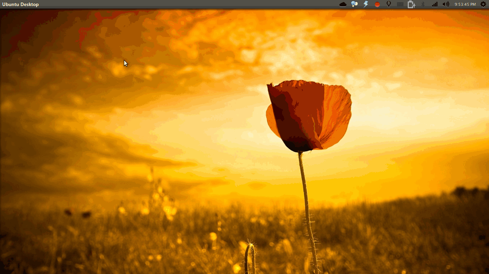

Boost your productivity with compiz
Summary
Compiz provides powerful window control features which can be used to improve daily work flow.
Installation
To start off, you'll need to install the following additional packages:
compizconfig-settings-manager compiz-plugins-main compiz-plugins-extra
Warning
Before you proceed, you should know that fiddling with compiz is risky and will probably cause your desktop session to freeze if something goes wrong.
Enable XServer Zap keyboard shortcut and be prepared to use it.
Preferences
Checkout the Preferences options. I prefer the Flat-file configuration backend as I want to keep all my compiz configuration in a single file and version control it.
Make sure you create a backup of your current config using the Export option before you start.
Here's my compiz config if you want to import it.
Commands

I've mapped <Super>Return to my terminal (urxvt) and <Super>e to my editor (gvim)
The Commands plugin gives you a simple way to assign keyboard shortcuts to any command.
Figure out your most used commands/apps and assign shortcuts to them. No more wading your way through menus and searching for apps. Some commands I use:
urxvt -> <Super>Return
gvim -> <Super>e
chromium-browser --incognito -> <Shift><Super>w
nautilus -> <Super>t
gnome-screensaver-command --lock -> <Super>b
General

I find the key-bindings in this section very useful. For example:
Close Window -> <Super>q
Toggle Window Maximizes -> <Super>m
Combined with Commands plugin above, this configuration allows you to spawn, close and maximize/restore your windows all with key-bindings!
Extra WM Actions

Ever wanted to turn a window fullscreen but couldn't because the app doesn't allow it? Want to keep a window on top?
Extra WM actions provides key-bindings for these features. The mapping I use:
Toggle Fullscreen -> <Supfer>f
Grid
{kind=link}
Grid provides a window tiling feature with intuitive key-bindings. It's great for people coming from a tiling window manager (like me).
Desktop Wall/Cube

Both plugins provide an intuitive UI for multiple workspaces and are very helpful for multitasking.
I map the Move Left/Right to keys on the home row:
Move Left -> <Shift><Control><Primary><Super>j
Move Right -> <Shift><Control><Primary><Super>k
Conclusion
I find compiz's features and customizability very useful and I hope you do too.
Let me know if you know any useful tips in comments.